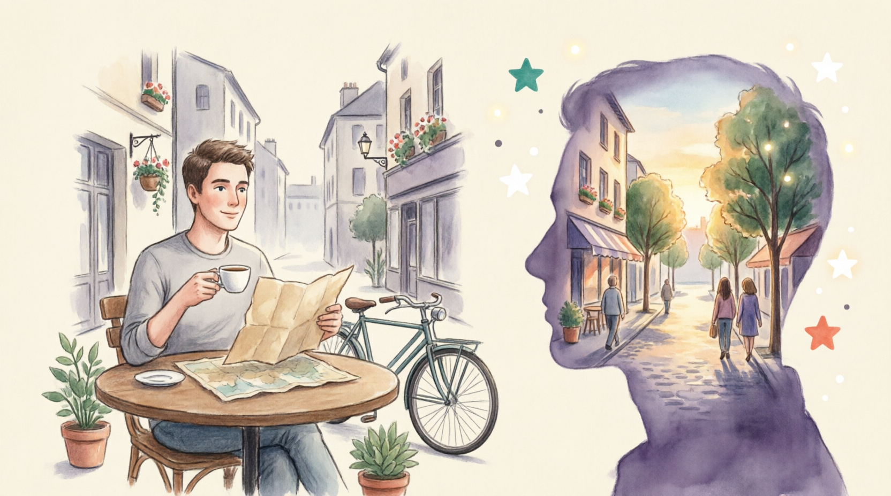

How to slow down when on holiday
1. Have you ever needed a holiday to recover from a holiday? Why do you think it happens?
2. What does your ideal holiday look like: a detailed itinerary or going with the flow?
What is the core problem that the "soft travel" trend aims to solve?
Planning a holiday this summer? Here, we look at the TikTok 'soft travel' trend and share some tips for getting started. What is soft travel?
Many of us have been guilty of returning from a holiday and feeling that we need another holiday to recover. The rush to tick off every hotspot on our itinerary, along with the pressure to make every moment count can leave us feeling even more exhausted than when we left.
The latest travel trend, 'soft travel', encourages a different approach. Soft travel is all about slowing down and taking time off to genuinely unwind and relax. Much like the wellbeing trend 'slow living', soft travel is about finding balance, letting go of expectations, listening to your body and focusing on what you actually enjoy, rather than feeling pressure to have what others believe to be the ideal holiday.
Adam Schwab, co-founder and CEO of Luxury Escapes, explains: "Rather than rushing from attraction to attraction, soft travellers are savouring simple pleasures – strolling leisurely through charming neighbourhoods without an agenda, getting lost in local shops, or relaxing at cafes with a good book and coffee."
"This trend is resonating with many people, especially city dwellers because it helps to appease burnout from the over-scheduled, that many people are tired of. Instead, people are craving authentic, immersive experiences that let them live like locals for a while and be present in the moment."
When you're a planner at heart, going with the flow may not sound appealing. It can be tempting to pre-plan every minute of your holiday and while it's useful to have a general idea of what you want to do, try to give yourself the freedom to be spontaneous. This could mean swapping out social media for a good old-fashioned map and veering off the beaten tourist path or leaving room for recommendations from locals. Locals will often be able to recommend things to do, see, and eat that you won't be able to find when looking online, allowing you to have a much more authentic experience.
When visiting an unfamiliar place, we often want to snap as many photos as possible to share on social media. However, getting the perfect Instagram shots can cut into valuable holiday time. To avoid needing to carry your phone with you everywhere you go, consider capturing memories with a disposable camera and try to limit screen time where possible to make sure you're staying present with those around you and your new surroundings. It's also a good idea to set boundaries and temporarily remove any work-related apps from your phone to avoid distractions and allow yourself to switch off. In her article, 'Making your long-awaited summer holiday less stressful,' Counsellor Laila Hamade says, "Unrealistic expectations to create amazing memories on holidays can lead to extra stress and disappointment. We live in a society where comparisons are almost the norm, aim to try not to compare your holiday with friends, do this by taking a break from social media and your phone, holidays are perfect to start practising mindfulness, by slowing down and becoming more aware."
Consider opting for accommodation with everything you need a short gentle stroll away. Not only do you have the opportunity to pause and take in your surroundings but you can also change course according to whichever route or path takes your fancy. If you're solo travelling, walking is a great opportunity to meet like-minded tourists, so don't be afraid to make eye contact, share a smile and ask for directions or about interesting things to do, you never know who you might meet along the way.
With so many different attractions to explore when away, it can be easy to push yourself to exhaustion. Make sure to schedule time to rest and recharge so that you can fully appreciate each destination without feeling overwhelmed. It's important to pace yourself and prioritise the experiences that matter most to you.
Ultimately, there really is no one-size-fits-all approach to soft travel, it's all about what feels right for you.
Planning a holiday this summer? Here, we look at the TikTok 'soft travel' trend and share some tips for getting started. What is soft travel?
Many of us have been guilty of returning from a holiday and feeling that we need another holiday to recover. The rush to tick off every place to be (h...) on our route of a journey (i...) , along with the pressure to make every moment count can leave us feeling even more exhausted than when we left.
The latest travel trend, 'soft travel', encourages a different approach. Soft travel is all about slowing down and taking time off to genuinely relax (u...) and relax. Much like the wellbeing trend 'slow living', soft travel is about finding balance, letting go of expectations, listening to your body and focusing on what you actually enjoy, rather than feeling pressure to have what others believe to be the ideal holiday.
Adam Schwab, co-founder and CEO of Luxury Escapes, explains: "Rather than rushing from attraction to attraction, soft travellers are enjoying (s...) simple pleasures – walking (s...) leisurely through charming neighbourhoods without an agenda, getting lost in local shops, or relaxing at cafes with a good book and coffee."
"This trend is resonating with many people, especially city residents (d...) because it helps to appease burnout from the over-scheduled, that many people are tired of. Instead, people are craving authentic, immersive experiences that let them live like locals for a while and be present in the moment."
How to embrace soft travel
Welcome spontaneity
When you're a planner at heart, going with the flow may not sound appealing. It can be tempting to pre-plan every minute of your holiday and while it's useful to have a general idea of what you want to do, try to give yourself the freedom to be spontaneous.
This could mean exchanging (s...) out social media for a good old-fashioned map and suddenly changing (v...) off the beaten tourist path or leaving room for recommendations from locals. Locals will often be able to recommend things to do, see, and eat that you won't be able to find when looking online, allowing you to have a much more authentic experience.
Limit screen time
When visiting an unfamiliar place, we often want to snap as many photos as possible to share on social media. However, getting the perfect Instagram shots can cut into valuable holiday time. To avoid needing to carry your phone with you everywhere you go, consider recording (c...) memories with a disposable camera and try to limit screen time where possible to make sure you're staying present with those around you and your new surroundings. It's also a good idea to limit (s...b...) and temporarily remove any work-related apps from your phone to avoid distractions and allow yourself to switch off.
In her article, 'Making your long-awaited summer holiday less stressful,' Counsellor Laila Hamade says, "Unrealistic expectations to create amazing memories on holidays can lead to extra stress and disappointment. We live in a society where comparisons are almost the norm, aim to try not to compare your holiday with friends, do this by taking a break from social media and your phone, holidays are perfect to start practising mindfulness, by slowing down and becoming more aware."
Take a stroll
Consider choosing (o...) for accommodation with everything you need a short gentle stroll away. Not only do you have the opportunity to pause and take in your surroundings but you can also change course according to whichever route or path takes your fancy. If you're solo travelling, walking is a great opportunity to meet of the same mind (l...) tourists, so don't be afraid to make eye contact, share a smile and ask for directions or about interesting things to do, you never know who you might meet along the way.
Listen to your body
With so many different attractions to explore when away, it can be easy to push yourself to exhaustion. Make sure to schedule time to rest and recharge so that you can fully appreciate each destination without feeling overwhelmed. It's important to control your speed or effort (p...y...) and prioritise the experiences that matter most to you.
Ultimately, there really is no multifunction (o...) approach to soft travel, it's all about what feels right for you.
Not only do you have the opportunity to pause and take in your surroundings but you can also change course according to whichever route or path takes your fancy.
Word order is inverted after certain words and phrases when these are put at the beginning of a sentence or clause in order to emphasise them. This kind of inversion is found mainly in formal speech and writing.
Inversion occurs after words and phrases with a "negative" meaning:
• the negative adverbs: never (before), rarely, seldom, barely/hardly/scarcely… when/before; no sooner … than; nowhere; neither, nor
Rarely have I met anyone with such enthusiasm.
No sooner had Maria walked through the door than she started to talk about her proposal.
I hadn't met Maria before, and nor had the other members of the committee.
• only + a time expression (after, later, then) or a prepositional phrase:
Only after Maria threatened to withdraw her support did the council back down.
• the prepositional phrases at no time, on no account, under / in no circumstances; in no way:
At no time has she ever accepted payment for her educational work.
She argued that under no circumstances should children from poorer backgrounds be made to pay for music lessons.
• certain expressions with not: not only, not until, not since, not for one moment, not once, not a + noun:
Not only has she persuaded YCO members to give up their time, but she has also encouraged visiting musicians to give free concerts in schools.
• little with a negative meaning:
Little did she realise when she set up the project that it would be so influential.
That new café with free Wi-Fi has become a popular for students and remote workers.
The Hawaiian islands are a geological , known for their active volcanoes.
To improve security, the IT department asked us to avoid using public Wi-Fi for company business.
When it comes to education, a approach often fails to meet the needs of different learning styles.
The software is highly customizable because the developers knew a solution wouldn't work for every business.
He bought a cheap, hat, but it was far too big and kept falling over his eyes.
She joined a book club to meet people who also enjoyed historical fiction.
The conference was a great opportunity for professionals to network and share ideas.
We started the company together because we were in our belief that ethical business could be profitable.
I don't have a strict itinerary for my vacation; I prefer to and see what each day brings.
When the original plan fell through, he was easy-going enough to just and try the new suggestion.
My friend is a meticulous planner, so it's good for her to sometimes and be spontaneous.
She had the entire vacation mapped out by the hour—she's .
As , he felt stressed when the meeting started without a clear agenda.
I bought a detailed daily organizer because I'm and need to write everything down.
He took a small bite of the rich chocolate cake, wanting to every moment of the delicious dessert.
After a long and stressful week, she sat in the quiet garden to her hard-won peace.
Don't rush through the museum; take your time to the beauty of each painting.
The travel agent sent us a detailed that included our flight times, hotel addresses, and a list of scheduled tours.
I like to have a rough when I visit a new city, but I always leave some free time for spontaneous exploration.
His packed for the business trip left no room for rest, with back-to-back meetings from morning until evening.
After a long day at the office, I need an hour to read a book and before I can interact with anyone.
For him, fishing is the only way to ; the quiet solitude helps him clear his mind completely.
It's hard to on vacation when you're constantly checking your work email.
Many take advantage of cultural amenities like museums, theaters, and concerts that are readily available.
The new park was designed to give a much-needed green space to escape the concrete jungle.
As lifelong , they were amazed by the silence and the brilliant display of stars in the countryside.
What is 'soft travel' and what does it involve?
Which tip for embracing soft travel (e.g., welcome spontaneity, limit screen time, take a stroll, listen to your body) do you think would be most challenging for you to follow, and why?
1. According to Adam Schwab, what are two specific activities that "soft travellers" enjoy?
2. Why is the "soft travel" trend resonating with city dwellers in particular?
3. What are two suggested methods for limiting screen time while traveling?
4. Are you a planner at heart, needing a detailed itinerary, or do you prefer to go with the flow and see what happens? What are the pros and cons of each style?
5. If you were to plan a "soft travel" holiday to a place you know well, what is one spontaneous activity you would leave room for?
6. What are the benefits of choosing to veer off the beaten tourist path? Can you share an experience where doing this led to a memorable discovery?